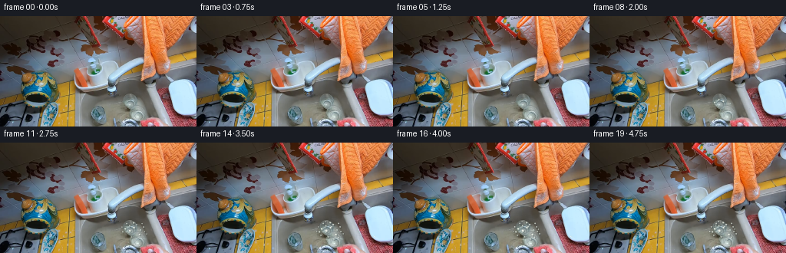
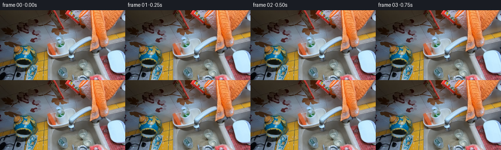
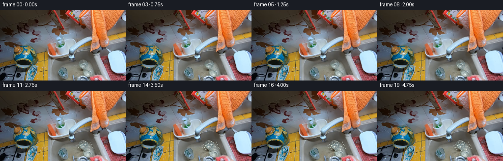
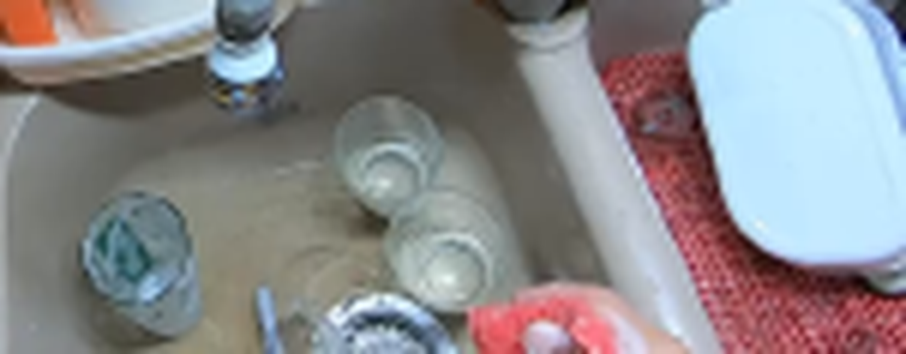
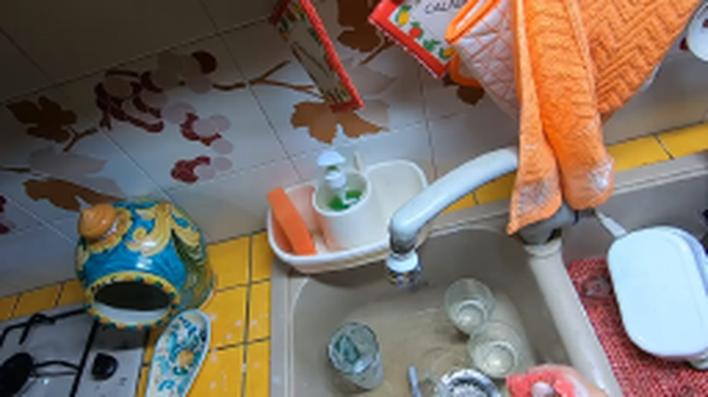
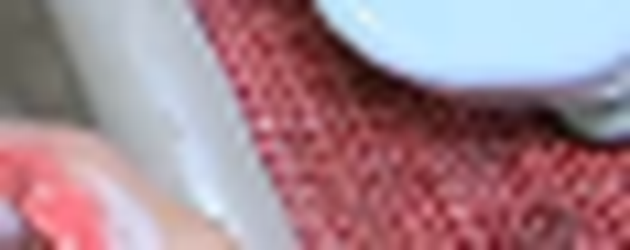
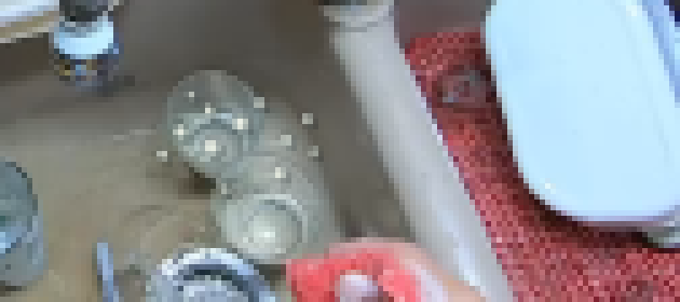
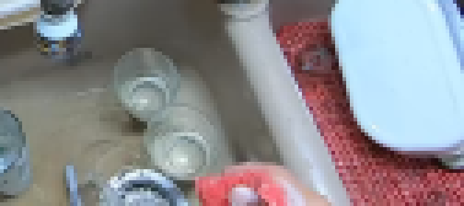

CODING AGENTS AS PIXEL WORLD MODELS
traex/DeepSeek-V4.1-Flash · common50_0027
点击播放 · 原生 RGB 像素
逐轮保存的候选
回放视频、检查图与代码变化。
每份候选均可单独播放。实际图片检查记录在下方工具轨迹中。
候选 01播放与检查图
点击播放 · 原生 RGB 像素


展开代码变化
--- 上一保存版本
+++ 本次保存版本
@@ -0,0 +1,299 @@
+from pathlib import Path
+
+import cv2
+import numpy as np
+from PIL import Image
+
+import artifact_io
+
+
+ROOT = Path(__file__).resolve().parent
+WIDTH, HEIGHT = 256, 144
+FRAME_COUNT = 20
+SUPERSAMPLE = 4
+
+
+def smoothstep(value):
+ value = np.clip(value, 0.0, 1.0)
+ return value * value * (3.0 - 2.0 * value)
+
+
+def rounded_box_distance(u, v, half_w, half_h, radius):
+ qx = np.abs(u) - half_w + radius
+ qy = np.abs(v) - half_h + radius
+ outside = np.hypot(np.maximum(qx, 0.0), np.maximum(qy, 0.0))
+ inside = np.minimum(np.maximum(qx, qy), 0.0)
+ return outside + inside - radius
+
+
+def capsule_distance(u, v, start, end, radius):
+ ax, ay = start
+ bx, by = end
+ pax = u - ax
+ pay = v - ay
+ bax = bx - ax
+ bay = by - ay
+ projection = np.clip((pax * bax + pay * bay) / (bax * bax + bay * bay), 0.0, 1.0)
+ return np.hypot(pax - bax * projection, pay - bay * projection) - radius
+
+
+def edge_alpha(distance, edge_width=1.2 / SUPERSAMPLE):
+ return smoothstep((edge_width - distance) / (2.0 * edge_width))
+
+
+def inverse_pose(x, y, center, angle_degrees):
+ angle = np.deg2rad(angle_degrees)
+ cosine, sine = np.cos(angle), np.sin(angle)
+ dx = x - center[0]
+ dy = y - center[1]
+ return cosine * dx + sine * dy, -sine * dx + cosine * dy
+
+
+def make_hand_masks(u, v):
+ palm = rounded_box_distance(u - 23.0, v, 14.0, 11.0, 7.0)
+ fingers = [
+ capsule_distance(u, v, (10.5, -9.5), (-4.5, -8.8), 3.1),
+ capsule_distance(u, v, (10.5, -3.2), (-8.2, -3.0), 3.25),
+ capsule_distance(u, v, (10.5, 3.2), (-8.0, 3.5), 3.15),
+ capsule_distance(u, v, (10.5, 9.5), (-4.2, 8.8), 2.95),
+ ]
+ thumb = capsule_distance(u, v, (18.0, -10.0), (1.2, -11.5), 3.7)
+ forearm_a = capsule_distance(u, v, (29.0, 1.5), (54.0, 8.0), 10.2)
+ forearm_b = capsule_distance(u, v, (52.0, 7.0), (91.0, 23.0), 8.7)
+
+ union = palm
+ for finger in fingers:
+ union = np.minimum(union, finger)
+ union = np.minimum(union, thumb)
+ union = np.minimum(union, forearm_a)
+ union = np.minimum(union, forearm_b)
+ return union, palm, fingers, thumb, forearm_a, forearm_b
+
+
+def make_sponge_masks(u, v, scale):
+ half_w = 13.0 * scale
+ half_h = 6.3 * scale
+ top = rounded_box_distance(u, v + 0.45, half_w, half_h, 3.1 * scale)
+ side = rounded_box_distance(u, v - 1.0, half_w - 0.4, half_h - 0.6, 2.8 * scale)
+ return top, side, half_w, half_h
+
+
+def render_hand_sponge(cx, cy, angle_degrees, scale):
+ h = HEIGHT * SUPERSAMPLE
+ w = WIDTH * SUPERSAMPLE
+ y, x = np.mgrid[0:h, 0:w].astype(np.float32)
+ x = (x + 0.5) / SUPERSAMPLE
+ y = (y + 0.5) / SUPERSAMPLE
+ u, v = inverse_pose(x, y, (cx, cy), angle_degrees)
+
+ hand_distance, palm, fingers, thumb, forearm_a, forearm_b = make_hand_masks(u, v)
+ hand_alpha = edge_alpha(hand_distance)
+ sponge_top, sponge_side, _, _ = make_sponge_masks(u, v, scale)
+ sponge_alpha = edge_alpha(sponge_top)
+ side_alpha = edge_alpha(sponge_side) * (1.0 - sponge_alpha)
+ object_alpha = np.maximum(hand_alpha, sponge_alpha)
+
+ # A soft, offset contact shadow keeps the procedural object grounded in the sink.
+ shadow_shift = int(round(2.5 * SUPERSAMPLE))
+ shifted = np.zeros_like(object_alpha)
+ shifted[shadow_shift:, :-shadow_shift] = object_alpha[:-shadow_shift, shadow_shift:]
+ shifted = cv2.GaussianBlur(shifted, (0, 0), 4.2 * SUPERSAMPLE)
+ shadow_alpha = np.clip(shifted * 0.38, 0.0, 0.38)
+
+ # Sponge: porous red foam with a compressed lower side and beveled edges.
+ pore_centers = [
+ (-8.4, -3.2, 0.72), (-6.2, 0.8, 0.54), (-4.0, -4.4, 0.48),
+ (-3.5, 2.9, 0.62), (-1.2, -1.3, 0.50), (0.7, 3.7, 0.45),
+ (1.2, -4.2, 0.62), (3.6, -1.0, 0.56), (5.0, 2.8, 0.46),
+ (7.2, -3.2, 0.54), (8.8, 0.8, 0.66), (-9.5, 1.8, 0.42),
+ (-2.2, -2.5, 0.34), (2.3, 1.2, 0.36), (6.8, 4.1, 0.38),
+ (9.7, -1.6, 0.38), (-7.2, 4.2, 0.40),
+ ]
+ pore_field = np.zeros_like(u)
+ for px, py, radius in pore_centers:
+ pore_field = np.maximum(pore_field, edge_alpha(np.hypot(u - px, v - py) - radius))
+ rim = np.clip(1.0 - sponge_top / (1.7 * scale), 0.0, 1.0)
+ texture = (
+ 0.50 * np.sin(4.4 * u + 2.1 * v)
+ + 0.32 * np.sin(9.2 * u - 4.7 * v)
+ + 0.18 * np.sin(15.0 * u + 8.0 * v)
+ )
+ sponge_rgb = np.empty((h, w, 3), dtype=np.float32)
+ sponge_rgb[:] = (188.0, 42.0, 36.0)
+ sponge_rgb += texture[..., None] * np.array((10.0, 7.0, 5.0), dtype=np.float32)
+ sponge_rgb -= (rim * 0.52)[..., None] * np.array((65.0, 24.0, 20.0), dtype=np.float32)
+ sponge_rgb += (pore_field * 0.82)[..., None] * np.array((-76.0, -20.0, -18.0), dtype=np.float32)
+ top_glint = np.clip(1.0 - np.abs(v + 5.2) / 1.0, 0.0, 1.0)
+ sponge_rgb += (top_glint * 0.45)[..., None] * np.array((38.0, 25.0, 22.0), dtype=np.float32)
+ side_rgb = np.empty_like(sponge_rgb)
+ side_rgb[:] = (117.0, 29.0, 27.0)
+
+ # Warm skin, with local shading and subtle fine-grain color variation.
+ skin_noise = (
+ 0.45 * np.sin(5.1 * u + 3.7 * v)
+ + 0.30 * np.sin(13.0 * u - 7.0 * v)
+ + 0.25 * np.sin(23.0 * u + 11.0 * v)
+ )
+ skin_rgb = np.empty((h, w, 3), dtype=np.float32)
+ skin_rgb[:] = (202.0, 136.0, 101.0)
+ skin_rgb += skin_noise[..., None] * np.array((5.5, 3.5, 2.8), dtype=np.float32)
+ skin_rgb -= np.clip(v / 20.0, -0.6, 0.7)[..., None] * np.array((13.0, 10.0, 7.0), dtype=np.float32)
+ skin_rgb -= np.clip((u - 32.0) / 45.0, 0.0, 0.6)[..., None] * np.array((17.0, 12.0, 9.0), dtype=np.float32)
+
+ hand_rim = np.clip(1.0 - hand_distance / 1.8, 0.0, 1.0)
+ skin_rgb -= (hand_rim * 0.42)[..., None] * np.array((53.0, 29.0, 23.0), dtype=np.float32)
+ top_light = np.clip(-(v + 5.0) / 12.0, 0.0, 1.0) * 0.30
+ skin_rgb += top_light[..., None] * np.array((30.0, 23.0, 17.0), dtype=np.float32)
+
+ # Finger separation and wrist creases are narrow translucent marks.
+ crease_alpha = np.zeros_like(u)
+ for crease_v in (-6.3, 0.0, 6.3):
+ line = np.clip(1.0 - np.abs(v - crease_v) / 0.42, 0.0, 1.0)
+ line *= smoothstep((u - (-4.0)) / 2.0) * smoothstep((11.0 - u) / 2.0)
+ crease_alpha = np.maximum(crease_alpha, line * 0.44)
+ wrist_curve = np.abs(v - (-0.8 + 0.03 * (u - 32.0) ** 2)) < 0.38
+ wrist_curve &= (u > 30.0) & (u < 39.0)
+ crease_alpha = np.maximum(crease_alpha, wrist_curve.astype(np.float32) * 0.30)
+ crease_alpha *= hand_alpha
+ skin_rgb -= crease_alpha[..., None] * np.array((49.0, 28.0, 22.0), dtype=np.float32)
+
+ # A few knuckle highlights help the back of the hand read at low resolution.
+ knuckle_light = np.zeros_like(u)
+ for ky in (-9.5, -3.2, 3.2, 9.5):
+ knuckle_light = np.maximum(knuckle_light, np.exp(-((u - 11.5) ** 2 + (v - ky) ** 2) / 9.0))
+ skin_rgb += (knuckle_light * hand_alpha * 0.22)[..., None] * np.array((39.0, 29.0, 21.0), dtype=np.float32)
+
+ overlay = np.zeros((h, w, 4), dtype=np.float32)
+ overlay[..., :3] = np.array((42.0, 47.0, 46.0), dtype=np.float32)
+ overlay[..., 3] = shadow_alpha
+ for rgb, alpha in ((side_rgb, side_alpha), (sponge_rgb, sponge_alpha), (skin_rgb, hand_alpha)):
+ rgb = np.clip(rgb, 0.0, 255.0)
+ overlay[..., :3] = rgb * alpha[..., None] + overlay[..., :3] * (1.0 - alpha[..., None])
+ overlay[..., 3] = alpha + overlay[..., 3] * (1.0 - alpha)
+
+ overlay_small = cv2.resize(
+ overlay, (WIDTH, HEIGHT), interpolation=cv2.INTER_AREA
+ )
+ return overlay_small
+
+
+def add_foam(frame, frame_index, sponge_center):
+ if frame_index < 8:
+ return frame
+
+ events = [
+ (8, 163.0, 112.5, 1.20), (8, 168.5, 108.5, 0.95),
+ (8, 174.5, 111.0, 1.35), (8, 183.0, 114.0, 0.85),
+ (9, 160.0, 116.5, 1.05), (9, 169.0, 115.0, 1.55),
+ (9, 181.5, 120.0, 1.20), (9, 188.0, 116.0, 0.75),
+ (10, 165.0, 105.5, 0.85), (10, 178.0, 107.0, 1.05),
+ (10, 187.0, 110.0, 0.90), (10, 171.5, 123.0, 0.80),
+ (11, 158.5, 110.0, 0.75), (11, 174.0, 104.5, 1.15),
+ (11, 185.0, 105.5, 0.80), (11, 191.0, 119.0, 0.70),
+ (12, 162.0, 121.0, 0.95), (12, 179.0, 126.0, 0.85),
+ (13, 168.0, 102.8, 0.70), (13, 184.5, 123.5, 0.90),
+ (14, 156.5, 116.0, 0.70), (14, 176.0, 109.5, 0.95),
+ (15, 189.0, 113.0, 0.65), (16, 164.5, 108.0, 0.60),
+ ]
+ scale = 4
+ canvas = np.zeros((HEIGHT * scale, WIDTH * scale, 4), dtype=np.float32)
+ for onset, fx, fy, radius in events:
+ if frame_index < onset:
+ continue
+ age = frame_index - onset
+ growth = 0.035 * min(age, 5)
+ radius = radius + growth
+ fx += 0.13 * np.sin(age * 0.9 + fx)
+ fy -= 0.08 * min(age, 4)
+ center = (int(round(fx * scale)), int(round(fy * scale)))
+ r = max(1, int(round(radius * scale)))
+ cv2.circle(canvas, (center[0] + scale, center[1] + scale), r,
+ (37.0, 48.0, 51.0, 82.0), -1, cv2.LINE_AA)
+ cv2.circle(canvas, center, r,
+ (238.0, 242.0, 229.0, 220.0), -1, cv2.LINE_AA)
+ cv2.circle(canvas, (center[0] - max(1, r // 3), center[1] - max(1, r // 3)),
+ max(1, r // 3), (255.0, 255.0, 247.0, 225.0), -1, cv2.LINE_AA)
+ cv2.circle(canvas, center, r, (181.0, 191.0, 184.0, 110.0),
+ max(1, scale // 2), cv2.LINE_AA)
+
+ small = cv2.resize(canvas, (WIDTH, HEIGHT), interpolation=cv2.INTER_AREA)
+ alpha = small[..., 3:4] / 255.0
+ return (small[..., :3] * alpha + frame * (1.0 - alpha)).astype(np.uint8)
+
+
+def add_wet_glints(frame, frame_index, center):
+ if frame_index < 8:
+ return frame
+ result = frame.astype(np.float32)
+ phase = (frame_index - 8) * 0.7
+ glints = [
+ (165.0, 109.0, 0.00), (182.0, 114.0, 1.40),
+ (170.0, 126.0, 2.80), (188.0, 125.0, 4.20),
+ ]
+ y, x = np.mgrid[0:HEIGHT, 0:WIDTH].astype(np.float32)
+ for gx, gy, offset in glints:
+ pulse = 0.55 + 0.45 * np.sin(phase + offset)
+ streak = np.exp(-((x - gx) / 2.7) ** 2 - ((y - gy) / 0.55) ** 2)
+ streak += 0.55 * np.exp(-((x - (gx + 1.4)) / 1.6) ** 2 - ((y - (gy + 1.0)) / 0.48) ** 2)
+ result += (streak * pulse * 0.18)[..., None] * np.array((170.0, 198.0, 193.0), dtype=np.float32)
+ return np.clip(result, 0.0, 255.0).astype(np.uint8)
+
+
+def main():
+ first_frame = np.asarray(Image.open(ROOT / "first_frame.png").convert("RGB"), dtype=np.uint8)
+ assert first_frame.shape == (HEIGHT, WIDTH, 3)
+
+ # Each tuple is: frame, sponge center x/y, hand angle, sponge compression.
+ poses = [
+ (1, 250.0, 140.0, 7.0, 1.00),
+ (2, 239.0, 137.0, 10.0, 1.00),
+ (3, 228.0, 133.5, 13.0, 1.00),
+ (4, 217.0, 129.5, 16.0, 1.00),
+ (5, 206.0, 126.0, 18.0, 1.00),
+ (6, 196.0, 122.5, 19.0, 1.00),
+ (7, 186.0, 120.0, 20.0, 0.98),
+ (8, 177.0, 118.0, 21.0, 0.94),
+ (9, 170.0, 121.0, 18.0, 0.91),
+ (10, 179.0, 124.0, 23.0, 0.92),
+ (11, 167.0, 116.0, 18.0, 0.90),
+ (12, 178.0, 122.5, 24.0, 0.92),
+ (13, 168.0, 119.0, 20.0, 0.90),
+ (14, 177.0, 124.0, 23.0, 0.91),
+ (15, 168.0, 117.0, 19.0, 0.90),
+ (16, 180.0, 119.5, 21.0, 0.94),
+ (17, 194.0, 123.0, 19.0, 0.98),
+ (18, 212.0, 129.0, 15.0, 1.00),
+ (19, 233.0, 136.0, 10.0, 1.00),
+ ]
+ pose_by_frame = {frame: (x, y, angle, scale) for frame, x, y, angle, scale in poses}
+
+ frames = np.empty((FRAME_COUNT, HEIGHT, WIDTH, 3), dtype=np.uint8)
+ frames[0] = first_frame
+ for index in range(1, FRAME_COUNT):
+ cx, cy, angle, scale = pose_by_frame[index]
+ frame = first_frame.copy()
+ overlay = render_hand_sponge(cx, cy, angle, scale)
+ alpha = overlay[..., 3:4] / 255.0
+ frame = (overlay[..., :3] * alpha + frame * (1.0 - alpha)).astype(np.uint8)
+ frame = add_wet_glints(frame, index, (cx, cy))
+ frame = add_foam(frame, index, (cx, cy))
+ frames[index] = frame
+
+ artifact_io.save(frames, ROOT)
+
+ # Small local preview for rapid inspection; the submitted data remains pixels.npz.
+ preview = frames[1:].astype(np.float32)
+ preview_frames = [Image.fromarray(frame) for frame in frames]
+ preview_frames[0].save(
+ ROOT / ".tmp" / "preview.gif",
+ save_all=True,
+ append_images=preview_frames[1:],
+ duration=250,
+ loop=0,
+ optimize=False,
+ )
+ return frames
+
+
+if __name__ == "__main__":
+ main()
候选 02播放与检查图
点击播放 · 原生 RGB 像素

展开代码变化
--- 上一保存版本
+++ 本次保存版本
@@ -50,16 +50,16 @@
def make_hand_masks(u, v):
- palm = rounded_box_distance(u - 23.0, v, 14.0, 11.0, 7.0)
+ palm = rounded_box_distance(u - 22.0, v, 11.0, 8.8, 5.4)
fingers = [
- capsule_distance(u, v, (10.5, -9.5), (-4.5, -8.8), 3.1),
- capsule_distance(u, v, (10.5, -3.2), (-8.2, -3.0), 3.25),
- capsule_distance(u, v, (10.5, 3.2), (-8.0, 3.5), 3.15),
- capsule_distance(u, v, (10.5, 9.5), (-4.2, 8.8), 2.95),
- ]
- thumb = capsule_distance(u, v, (18.0, -10.0), (1.2, -11.5), 3.7)
- forearm_a = capsule_distance(u, v, (29.0, 1.5), (54.0, 8.0), 10.2)
- forearm_b = capsule_distance(u, v, (52.0, 7.0), (91.0, 23.0), 8.7)
+ capsule_distance(u, v, (10.2, -7.2), (-3.8, -7.1), 2.35),
+ capsule_distance(u, v, (10.0, -2.3), (-7.0, -2.2), 2.48),
+ capsule_distance(u, v, (10.0, 2.5), (-7.0, 2.8), 2.44),
+ capsule_distance(u, v, (10.0, 7.2), (-3.5, 7.0), 2.28),
+ ]
+ thumb = capsule_distance(u, v, (17.5, -8.0), (2.5, -9.6), 2.75)
+ forearm_a = capsule_distance(u, v, (27.0, 1.0), (49.0, 7.0), 7.8)
+ forearm_b = capsule_distance(u, v, (47.0, 6.0), (84.0, 20.0), 6.7)
union = palm
for finger in fingers:
@@ -71,8 +71,8 @@
def make_sponge_masks(u, v, scale):
- half_w = 13.0 * scale
- half_h = 6.3 * scale
+ half_w = 15.0 * scale
+ half_h = 7.0 * scale
top = rounded_box_distance(u, v + 0.45, half_w, half_h, 3.1 * scale)
side = rounded_box_distance(u, v - 1.0, half_w - 0.4, half_h - 0.6, 2.8 * scale)
return top, side, half_w, half_h
@@ -91,14 +91,14 @@
sponge_top, sponge_side, _, _ = make_sponge_masks(u, v, scale)
sponge_alpha = edge_alpha(sponge_top)
side_alpha = edge_alpha(sponge_side) * (1.0 - sponge_alpha)
- object_alpha = np.maximum(hand_alpha, sponge_alpha)
+ object_alpha = np.maximum(hand_alpha, np.maximum(sponge_alpha, side_alpha))
# A soft, offset contact shadow keeps the procedural object grounded in the sink.
shadow_shift = int(round(2.5 * SUPERSAMPLE))
shifted = np.zeros_like(object_alpha)
shifted[shadow_shift:, :-shadow_shift] = object_alpha[:-shadow_shift, shadow_shift:]
shifted = cv2.GaussianBlur(shifted, (0, 0), 4.2 * SUPERSAMPLE)
- shadow_alpha = np.clip(shifted * 0.38, 0.0, 0.38)
+ shadow_alpha = np.clip(shifted * 0.30, 0.0, 0.30)
# Sponge: porous red foam with a compressed lower side and beveled edges.
pore_centers = [
@@ -119,10 +119,10 @@
+ 0.18 * np.sin(15.0 * u + 8.0 * v)
)
sponge_rgb = np.empty((h, w, 3), dtype=np.float32)
- sponge_rgb[:] = (188.0, 42.0, 36.0)
- sponge_rgb += texture[..., None] * np.array((10.0, 7.0, 5.0), dtype=np.float32)
- sponge_rgb -= (rim * 0.52)[..., None] * np.array((65.0, 24.0, 20.0), dtype=np.float32)
- sponge_rgb += (pore_field * 0.82)[..., None] * np.array((-76.0, -20.0, -18.0), dtype=np.float32)
+ sponge_rgb[:] = (197.0, 49.0, 40.0)
+ sponge_rgb += texture[..., None] * np.array((11.0, 7.0, 5.0), dtype=np.float32)
+ sponge_rgb -= (rim * 0.38)[..., None] * np.array((52.0, 18.0, 16.0), dtype=np.float32)
+ sponge_rgb += (pore_field * 0.70)[..., None] * np.array((-63.0, -16.0, -14.0), dtype=np.float32)
top_glint = np.clip(1.0 - np.abs(v + 5.2) / 1.0, 0.0, 1.0)
sponge_rgb += (top_glint * 0.45)[..., None] * np.array((38.0, 25.0, 22.0), dtype=np.float32)
side_rgb = np.empty_like(sponge_rgb)
@@ -135,19 +135,19 @@
+ 0.25 * np.sin(23.0 * u + 11.0 * v)
)
skin_rgb = np.empty((h, w, 3), dtype=np.float32)
- skin_rgb[:] = (202.0, 136.0, 101.0)
+ skin_rgb[:] = (216.0, 149.0, 112.0)
skin_rgb += skin_noise[..., None] * np.array((5.5, 3.5, 2.8), dtype=np.float32)
- skin_rgb -= np.clip(v / 20.0, -0.6, 0.7)[..., None] * np.array((13.0, 10.0, 7.0), dtype=np.float32)
- skin_rgb -= np.clip((u - 32.0) / 45.0, 0.0, 0.6)[..., None] * np.array((17.0, 12.0, 9.0), dtype=np.float32)
+ skin_rgb -= np.clip(v / 18.0, -0.7, 0.8)[..., None] * np.array((15.0, 11.0, 8.0), dtype=np.float32)
+ skin_rgb -= np.clip((u - 29.0) / 45.0, 0.0, 0.6)[..., None] * np.array((17.0, 12.0, 9.0), dtype=np.float32)
hand_rim = np.clip(1.0 - hand_distance / 1.8, 0.0, 1.0)
skin_rgb -= (hand_rim * 0.42)[..., None] * np.array((53.0, 29.0, 23.0), dtype=np.float32)
- top_light = np.clip(-(v + 5.0) / 12.0, 0.0, 1.0) * 0.30
- skin_rgb += top_light[..., None] * np.array((30.0, 23.0, 17.0), dtype=np.float32)
+ top_light = np.clip(-(v + 4.0) / 10.0, 0.0, 1.0) * 0.38
+ skin_rgb += top_light[..., None] * np.array((34.0, 25.0, 18.0), dtype=np.float32)
# Finger separation and wrist creases are narrow translucent marks.
crease_alpha = np.zeros_like(u)
- for crease_v in (-6.3, 0.0, 6.3):
+ for crease_v in (-4.75, 0.0, 4.75):
line = np.clip(1.0 - np.abs(v - crease_v) / 0.42, 0.0, 1.0)
line *= smoothstep((u - (-4.0)) / 2.0) * smoothstep((11.0 - u) / 2.0)
crease_alpha = np.maximum(crease_alpha, line * 0.44)
@@ -159,7 +159,7 @@
# A few knuckle highlights help the back of the hand read at low resolution.
knuckle_light = np.zeros_like(u)
- for ky in (-9.5, -3.2, 3.2, 9.5):
+ for ky in (-7.2, -2.3, 2.5, 7.2):
knuckle_light = np.maximum(knuckle_light, np.exp(-((u - 11.5) ** 2 + (v - ky) ** 2) / 9.0))
skin_rgb += (knuckle_light * hand_alpha * 0.22)[..., None] * np.array((39.0, 29.0, 21.0), dtype=np.float32)
@@ -245,25 +245,25 @@
# Each tuple is: frame, sponge center x/y, hand angle, sponge compression.
poses = [
- (1, 250.0, 140.0, 7.0, 1.00),
- (2, 239.0, 137.0, 10.0, 1.00),
- (3, 228.0, 133.5, 13.0, 1.00),
- (4, 217.0, 129.5, 16.0, 1.00),
- (5, 206.0, 126.0, 18.0, 1.00),
- (6, 196.0, 122.5, 19.0, 1.00),
- (7, 186.0, 120.0, 20.0, 0.98),
- (8, 177.0, 118.0, 21.0, 0.94),
- (9, 170.0, 121.0, 18.0, 0.91),
- (10, 179.0, 124.0, 23.0, 0.92),
- (11, 167.0, 116.0, 18.0, 0.90),
- (12, 178.0, 122.5, 24.0, 0.92),
- (13, 168.0, 119.0, 20.0, 0.90),
- (14, 177.0, 124.0, 23.0, 0.91),
- (15, 168.0, 117.0, 19.0, 0.90),
- (16, 180.0, 119.5, 21.0, 0.94),
- (17, 194.0, 123.0, 19.0, 0.98),
- (18, 212.0, 129.0, 15.0, 1.00),
- (19, 233.0, 136.0, 10.0, 1.00),
+ (1, 254.0, 143.0, 7.0, 1.00),
+ (2, 246.0, 141.0, 10.0, 1.00),
+ (3, 237.0, 138.0, 12.0, 1.00),
+ (4, 227.0, 134.0, 14.0, 1.00),
+ (5, 217.0, 130.0, 16.0, 1.00),
+ (6, 207.0, 126.5, 18.0, 1.00),
+ (7, 197.0, 123.0, 19.0, 0.99),
+ (8, 186.0, 120.0, 20.0, 0.95),
+ (9, 174.0, 118.0, 21.0, 0.92),
+ (10, 167.0, 121.0, 18.0, 0.90),
+ (11, 178.0, 123.5, 23.0, 0.92),
+ (12, 166.0, 116.0, 18.0, 0.90),
+ (13, 178.0, 123.0, 24.0, 0.92),
+ (14, 168.0, 119.0, 20.0, 0.90),
+ (15, 179.0, 124.0, 23.0, 0.91),
+ (16, 171.0, 117.0, 19.0, 0.90),
+ (17, 186.0, 120.0, 21.0, 0.95),
+ (18, 207.0, 126.0, 17.0, 0.98),
+ (19, 235.0, 137.0, 11.0, 1.00),
]
pose_by_frame = {frame: (x, y, angle, scale) for frame, x, y, angle, scale in poses}
候选 03播放与检查图
点击播放 · 原生 RGB 像素

展开代码变化
--- 上一保存版本
+++ 本次保存版本
@@ -282,7 +282,7 @@
artifact_io.save(frames, ROOT)
# Small local preview for rapid inspection; the submitted data remains pixels.npz.
- preview = frames[1:].astype(np.float32)
+ (ROOT / ".tmp").mkdir(exist_ok=True)
preview_frames = [Image.fromarray(frame) for frame in frames]
preview_frames[0].save(
ROOT / ".tmp" / "preview.gif",
可观测工具轨迹
实际执行的命令与返回图片。
命令 1exit 0
/bin/bash -c "pwd && rg --files -g '"'!*__pycache__*'"' | sed -n '1,160p'"
命令 2exit 0
/bin/bash -c "sed -n '1,240p' prompt.txt"
命令 3exit 0
/bin/bash -c "sed -n '1,300p' GENERATION_RULES.md"
命令 4exit 0
/bin/bash -c "find . -maxdepth 2 -type f -printf '%p %s bytes\\n' | sort"
命令 5exit 0
/bin/bash -c 'cat task_spec.json'
命令 6exit 0
/bin/bash -c "sed -n '1,260p' artifact_io.py"
命令 7exit 0
/bin/bash -c "sed -n '1,260p' player_template.html"
命令 8exit 0
/bin/bash -c "python - <<'PY'
from PIL import Image
im=Image.open('first_frame.png')
print(im.mode, im.size)
PY"命令 9exit 0
/bin/bash -c "python - <<'PY'
from PIL import Image
im=Image.open('first_frame.png')
im.resize((1024,576), Image.Resampling.NEAREST).save('.tmp/first_nearest.png')
im.crop((105,85,256,144)).resize((906,354), Image.Resampling.LANCZOS).save('.tmp/sink_crop.png')
PY"命令 10exit 0
/bin/bash -c "python - <<'PY'
from PIL import Image
im=Image.open('first_frame.png')
im.crop((0,0,256,144)).resize((1536,864), Image.Resampling.LANCZOS).save('.tmp/first_large.png')
PY"命令 11exit 0
/bin/bash -c "python - <<'PY'
import cv2, numpy as np
im=cv2.imread('first_frame.png')
print(cv2.__version__, im.shape)
PY"命令 12exit 0
/bin/bash -c "python - <<'PY'
from PIL import Image
im=Image.open('first_frame.png')
im.crop((198,121,256,144)).resize((696,276), Image.Resampling.LANCZOS).save('.tmp/redcloth.png')
PY"命令 13exit 0
/bin/bash -c 'python generate.py'
命令 14exit 0
/bin/bash -c "python - <<'PY'
from PIL import Image
for i in [6,8,10,12,16]:
im=Image.open(f'frames/{i:02d}.png')
im.crop((130,88,256,144)).resize((756,336), Image.Resampling.NEAREST).save(f'.tmp/f{i}_zoom.png')
PY"命令 15exit 0
/bin/bash -c "find .tmp -maxdepth 1 -type f -printf '%f %s\\n' | sort"
命令 16exit 0
/bin/bash -c "python - <<'PY'
import numpy as np
from PIL import Image
# print selected RGB rows/columns for sink and hand planning
im=np.array(Image.open('first_frame.png'))
for p in [(190,125),(210,130),(230,135),(180,122),(165,120),(150,116),(245,140),(220,120),(170,135)]:
x,y=p; print(p, im[y,x])
PY"命令 17exit 0
/bin/bash -c 'python generate.py'
命令 18exit 0
/bin/bash -c "python - <<'PY'
from PIL import Image
im=Image.open('frames/10.png')
im.resize((1024,576), Image.Resampling.NEAREST).save('.tmp/f10_big2.png')
PY"命令 19exit 0
/bin/bash -c "python - <<'PY'
from PIL import Image, ImageDraw
im=Image.open('first_frame.png').resize((1024,576), Image.Resampling.NEAREST)
d=ImageDraw.Draw(im)
for x in range(0,257,16):
d.line((x*4,0,x*4,576),fill=(255,255,0),width=1)
d.text((x*4+2,2),str(x),fill=(255,255,0))
for y in range(0,145,16):
d.line((0,y*4,1024,y*4),fill=(255,255,0),width=1)
d.text((2,y*4+2),str(y),fill=(255,255,0))
im.save('.tmp/grid.png')
PY"命令 20exit 0
/bin/bash -c "python - <<'PY'
import numpy as np
from PIL import Image
frames=np.stack([np.array(Image.open(f'frames/{i:02d}.png')) for i in range(20)])
first=np.array(Image.open('first_frame.png'))
print('shape',frames.shape,'dtype',frames.dtype)
print('frame0 exact',np.array_equal(frames[0],first))
print('changed pixels per frame',[(i,int(np.any(frames[i]"'!=first,axis=2).sum())) for i in range(20)])
print('"'adjacent mean abs diff', [round(float(np.abs(frames[i].astype(float)-frames[i-1]).mean()),2) for i in range(1,20)])
PY"命令 21exit 1
/bin/bash -c "python - <<'PY'
import numpy as np
z=np.load('pixels.npz')
print(z.files, z['pixels'].shape, z['pixels'].dtype)
print('npz frame0 exact:', np.array_equal(z['pixels'][0], np.array(__import__('PIL').Image.open('first_frame.png'))))
PY"命令 22exit 1
/bin/bash -c "python - <<'PY'
import numpy as np
from PIL import Image
z=np.load('pixels.npz')['pixels']
rgb=np.stack([(z[...,i]>>16).astype(np.uint8),(z[...,i]>>8&255).astype(np.uint8),(z[...,i]&255).astype(np.uint8)],axis=-1).transpose(2,0,1,3)
first=np.array(Image.open('first_frame.png'))
print('packed decoded', rgb.shape, rgb.dtype)
print('frame0 exact:', np.array_equal(rgb[0], first))
print('all PNG frames exact:', np.array_equal(rgb,np.stack([np.array(Image.open(f'frames/{i:02d}.png')) for i in range(20)])))
PY"命令 23exit 0
/bin/bash -c "python - <<'PY'
import numpy as np
from PIL import Image
z=np.load('pixels.npz')['pixels']
rgb=np.stack([(z>>16).astype(np.uint8),((z>>8)&255).astype(np.uint8),(z&255).astype(np.uint8)],axis=-1).transpose(2,0,1,3)
first=np.array(Image.open('first_frame.png'))
print('packed decoded', rgb.shape, rgb.dtype)
print('frame0 exact:', np.array_equal(rgb[0], first))
print('all PNG frames exact:', np.array_equal(rgb,np.stack([np.array(Image.open(f'frames/{i:02d}.png')) for i in range(20)])))
PY"命令 24exit 0
/bin/bash -c "python generate.py && python -m py_compile generate.py && python - <<'PY'
import numpy as np
from PIL import Image
z=np.load('pixels.npz')['pixels']
rgb=np.stack([(z>>16).astype(np.uint8),((z>>8)&255).astype(np.uint8),(z&255).astype(np.uint8)],axis=-1).transpose(2,0,1,3)
first=np.array(Image.open('first_frame.png'))
assert rgb.shape == (20,144,256,3) and rgb.dtype == np.uint8
assert np.array_equal(rgb[0], first)
assert all(np.array_equal(rgb[i], np.array(Image.open(f'frames/{i:02d}.png'))) for i in range(20))
print('PASS: 20 frames, 256x144, uint8 RGB, frame 00 pixel-identical')
PY"命令 25exit 0
/bin/bash -c 'git status --short && du -h pixels.npz index.html inspection.png transition_check.png frames/00.png frames/19.png'
命令 26exit 0
/bin/bash -c "git status --short -- . ':"'!../../../../../../../../baselines'"' ':"'!../../../../../../../../research'"' ':"'!../../../../../../../../tools'"' ':"'!../../../../../../../../configs'"' ':"'!../../../../../../../../docs'"' ':"'!../../../../../../../../tests'"'"
视觉工具实际返回图片 1

视觉工具实际返回图片 2

视觉工具实际返回图片 3

视觉工具实际返回图片 4

视觉工具实际返回图片 5

视觉工具实际返回图片 6
视觉工具实际返回图片 7

视觉工具实际返回图片 8

视觉工具实际返回图片 9

视觉工具实际返回图片 10
视觉工具实际返回图片 11
视觉工具实际返回图片 12

保存候选 3 份；完成命令 26 次；可验证图片返回 12 张。原始 API 响应与完整日志保留在本地。